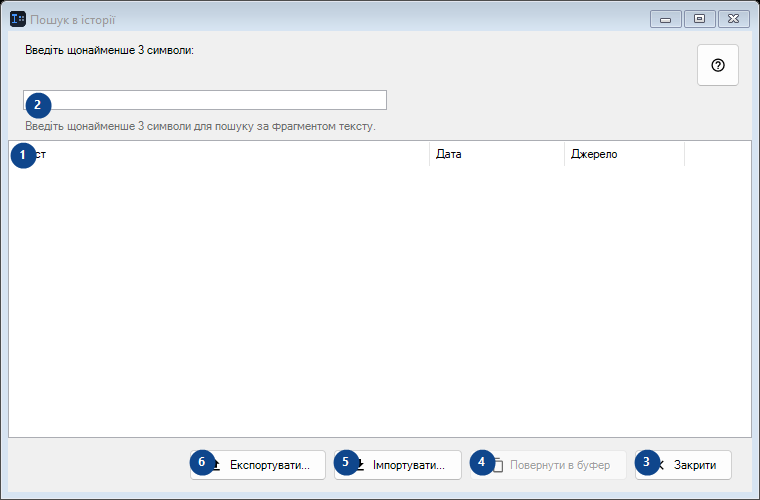
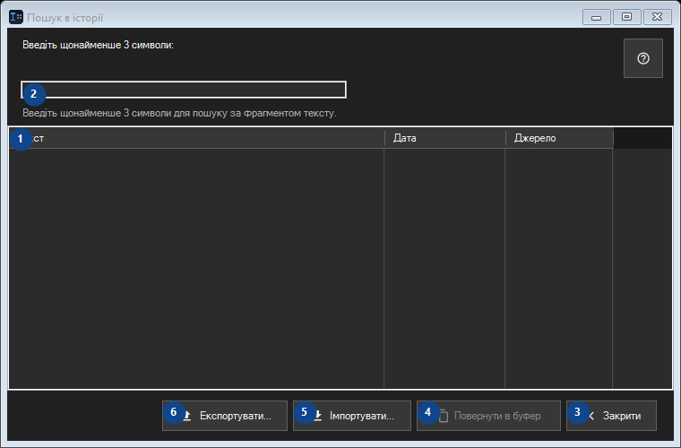

Пошук в історії
Для чого це вікно
Історія зберігається лише локально та шифрується Windows DPAPI для вашого облікового запису.


Порядок дій
Прочитайте пояснення до номерів, виберіть потрібні значення та продовжте командою вікна.
Елементи
1. Елементи
Тут показано поточний вміст або стан. Виберіть запис для роботи з ним. Текст / Дата / Джерело
Ваші сполучення клавіш2. Введіть щонайменше 3 символи:
Виберіть або введіть значення для сусіднього підпису. Перевірте його перед продовженням.
Ваші сполучення клавіш3. Закрити
Скористайтеся командою, коли потрібна вказана дія. Прочитайте запит підтвердження перед згодою.
Ваші сполучення клавіш4. Повернути в буфер
Скористайтеся командою, коли потрібна вказана дія. Прочитайте запит підтвердження перед згодою. Елемент зараз недоступний. Спочатку ввімкніть функцію або виберіть запис.
Ваші сполучення клавіш5. Імпортувати...
Скористайтеся командою, коли потрібна вказана дія. Прочитайте запит підтвердження перед згодою.
Ваші сполучення клавіш6. Експортувати...
Скористайтеся командою, коли потрібна вказана дія. Прочитайте запит підтвердження перед згодою.
Ваші сполучення клавіш